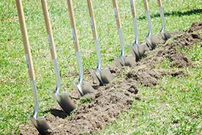
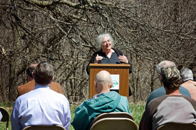

THE WAIT IS OVER: CONSTRUCTION HAS BEGUN
From truckloads of gravel being delivered to the flags marking trail routes, signs of trail construction are popping up all over Whiterock. In November, staff began creating a new, more sustainable, double track trail to replace the washed out lane approaching Long Creek. Under the careful supervision of volunteer foreman Mark Edwards, retired Department of Natural Resources trails coordinator, the new tractor and bobcat will work steadily until the ground freezes.
But not all the signs are so obvious. Whiterock Conservancy has awarded the contract to build sixteen miles of single track mountain bike trails and six miles of equestrian trails to Singletrack Trails out of Colorado. Singletrack Tails is known for their “light touch” on the land by employing the least impactful machine for each phase of the construction.
Singletrack Trails has worked in Iowa before, providing machine support for volunteer completed trails in Des Moines’ Ewing Park. Their spotlight projects include design and construction of the Curt Gowdy State Park Trail in Wyoming and Warner Mountain Bike Trail System in Nashville, TN. With years of experience and a great reputation, we are excited about the opportunity to work with them.
What does all this mean for next summer? Mobilization will start April 1 and you can expect to have new single track mountain bike, double track multi-use and equestrian trails opening throughout the summer with most complete by July 31. Trail updates, including announcements of new trail sections opening, will be shared on our website and Facebook page regularly. Mark your calendars for an opening weekend of activities on August 7-9, 2015.
We are still in the process of raising funds for some of the trail amenities such as improved campgrounds, a shower house, wildlife viewing blinds, a boardwalk over a wetland seep, improved trail signage and more– so please consider using the enclosed envelope to celebrate this benchmark by making a gift to help Whiterock finish the trail construction and all of the amenities that can make your visit more enjoyable.
If you would like to donate to assist in the trail construction, donate here or call 712-684-2697.
GROUNDBREAKING HELD FOR NEW TRAIL ON EARTH DAY
A groundbreaking celebration was held today to mark the ceremonial beginning of construction of the non-profit Whiterock Conservanc's new state-of-the-art Backcountry Trail system.

The 35 mile trail will wind through Whiterock's seven-square miles of oak savanna and prairie restoration areas, forests, pastures and sustainably farmed land in the Middle Raccoon River Valley near Coon Rapids, Iowa, sixty miles upstream from Des Moines. Including the trails already at Whiterock, walkers and runners will have 40 miles of trails to use. Of those, sixteen miles are designed specifically for mountain bikers, 7 miles are designed for equestrians and 12 miles are for use by all users including low powered vehicles for the mobility impaired to reach far into the landscape.
Construction on associated projects, such as an expansion of the visitor center has already begun. Hikers, mountain bikers and equestrians will be invited to begin using sections of the trails once construction is completed. Only firms that are members of the Professional Trail Builders Association will be considered to complete the construction.
"The trail is going to be significant," said Conrad Kramer, executive director of Whiterock Conservancy. "Other rural state parks of similar size with a trial system, attract at least 25,000 visitors a year. With the new trail, the construction of some more amenities, and some new business development by entrepreneurs, we can reach that."
Elizabeth Garst, one of the members of the Garst family that donated the land to form Whiterock Conservancy said, "on behalf of the family, this is a thrilling moment. We long dreamed this land would be open to the public, and this trail will make that happen."
Ken Herring, Whiterock board president sees this trail as, "an opportunity to make Whiterock a public adventure. A destination."

As project manager, Garst emphasized the significant scientific research that has been done by geologists, archeologists, hydrologists and ecologists to both determine where not to put the trail and to route the trail to features of significant interest. Two years of research on the trail corridor has been completed before construction to provide a baseline for studying the impacts of the trail on the ecology.
Low impact construction methods are used to reduce the negative impacts on the land. James Host, consulting landscape architect from Confluence said "with single track trail that can vary in width from 24 to 40 inches, we can work to not disturb any tree over 6 inches in diameter."
The trail is expected to provide a significant economic impact to the region. "Tourism is one of the best kept secrets in economic development" said Chad Schreck, executive director of Midwest Partnership, an economic development organization representing a four county area including Guthrie County where most of Whiterock Conservancy is located.
In addition, quality of life amenities like this trail help attract and retain a high quality work force in this area of rural Iowa which is experiencing low unemployment. Justin Roetman, chairperson of the Coon Rapids Economic Development Group sees this trail as an opportunity to not just attract visitors to the region, but to get residents that want to live here. "Coon Rapids can grow with Whiterock Conservancy."
Bayard Mayor, Gary Haverman believes Whiterock is a memory destination – a place to make memories. He ended the presentations before the groundbreaking fittingly by saying, "Let the memories begin."
To stay up to date on trail construction, please join our e-mail list
or friend Whiterock Conservancy on Facebook.
Maps, Stories and More!
Backcountry Trail Map
Thanks to the Des Moines Register for this great article: Swapping seed corn for bikes. Read our Case Statement for more information. Press release: Whiterock Conservancy is nearing completion of its fundraising for this unique project! Whiterock Conservancy is a 501(c)(3) nonprofit land trust established to protect and steward more than 5,000 acres of irreplaceable Iowa river-valley land. Your gift is extremely important to Whiterock because it provides resources that make an immediate impact - whether you make your commitment annually - a monthly sustaining gift - or honor a loved one with a tribute or memorial gift. Your contributions make our work possible.
Your support enables Whiterock Conservancy to continue building on the success of our restoration and conservation projects to date. We're working to make a lasting difference for nature and people - for today - and for future generations. Whiterock Conservancy 1390 Highway 141 Coon Rapids, IA 50058 Thank You for Your Support!
of our trail construction and land conservancy efforts.
Return to top of page
1390 Highway 141, Coon Rapids, IA 50058 | 712-684-2697
Whiterock Conservancy, a private, 501(c)(3) land trust, providing sustainable agriculture,
conservation, outdoor activities and recreation and environmental education.